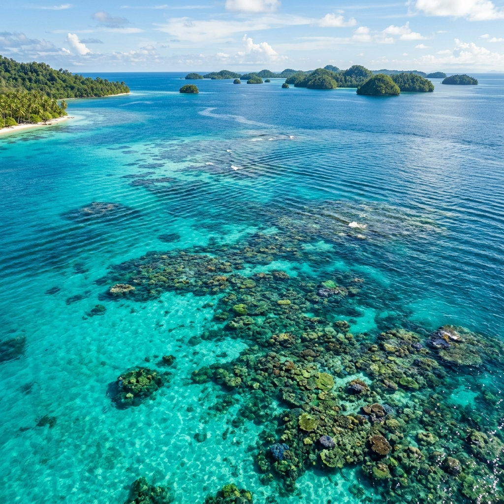

INTRO myOTEC
0:00
Platform informasi potensi energi laut berbasis perbedaan suhu laut untuk mendorong energi bersih, stabil, dan berkelanjutan bagi Indonesia.

OTEC (Ocean Thermal Energy Conversion) adalah teknologi pembangkit listrik yang memanfaatkan perbedaan suhu antara air laut permukaan yang hangat dan air laut dalam yang dingin. Perbedaan suhu (ΔT) minimal 20°C diperlukan agar sistem beroperasi secara efisien. Indonesia, sebagai negara kepulauan tropis, memiliki potensi OTEC yang sangat besar di berbagai wilayah perairannya.
Air hangat permukaan (25–30°C) menguapkan fluida kerja. Uap memutar turbin. Air dingin dari kedalaman 800–1000m mengondensasikan uap kembali.
Menggunakan fluida dengan titik didih rendah (amonia/propana) dalam siklus tertutup untuk efisiensi konversi energi termal yang optimal.
OTEC bukan sekadar pembangkit listrik — ia adalah sistem energi multifungsi yang memberikan berbagai manfaat sekaligus.
Beroperasi terus-menerus tanpa bergantung cuaca, angin, atau sinar matahari.
Proses kondensasi menghasilkan air tawar murni sebagai produk sampingan berharga.
Air dingin kaya nutrien dari laut dalam mempercepat pertumbuhan ikan dan alga.
Air laut dalam yang dingin dapat digunakan langsung untuk sistem pendingin gedung.
Hampir nol emisi karbon — mendukung target net-zero Indonesia 2060.
Berbagai negara telah mengimplementasikan dan mengembangkan teknologi OTEC. Berikut peta sebaran proyeknya.
Cari koordinat peta proyek OTEC dunia & Indonesia — min. 10 lokasi proyek
myOTEC berkontribusi langsung pada empat tujuan pembangunan berkelanjutan PBB.